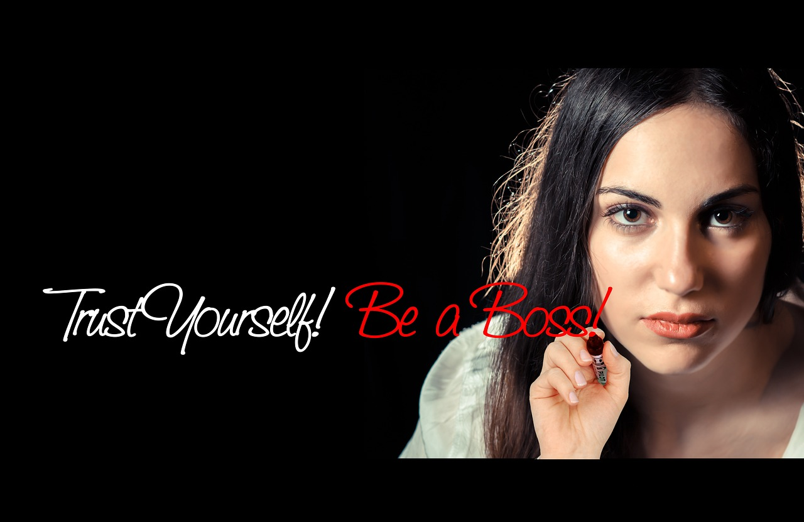
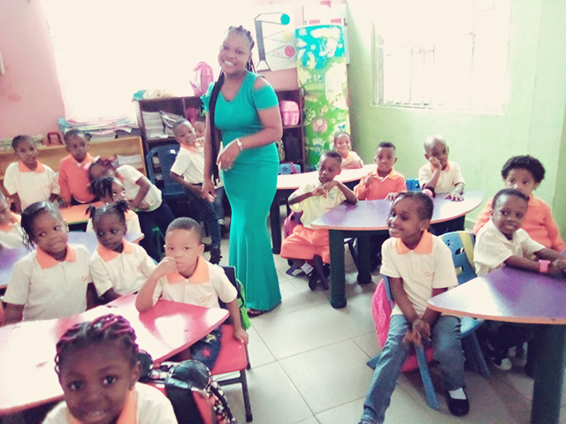

...it has not been easy but the motivation keeps growing from the passion.
The Starting Point
It is a self made decision which comes from a passion for coding that kickstarts this journey. The love for coding, the joy that comes from coding and the results of daily efforts keep the motivation high.
This journey starts by giving out so much time in learning, sticking so close to the system in coding, practicing everything learnt, making research to know more in coding and in programming as a whole. It is best to have it at the back of mind that there is no limit in coding or best to say programming.

Self Made Decision
Though coding can be fun, but it is on the other hand highly frustrating especially when being pushed by someone else to be in the field of programming. Self Made Decision from the coding passion is what keeps a programmer going, facing everyday and every coding challenge.

Uju-Akum in class with her pupils
Just as the children wakeup every morning with their spirit high to go to school and meet their friends, learn new thing especially when their school and class teacher is making learning fun to them, so it is to programmers who have seen the fun part of coding and have also made their computer their best friend.
The Coders Joy
As a programmer, the joy of going to sit in front the computer and start coding is like the joy of going to be with that one friend who turns up all the good feelings. After all the fun and the challenges that comes with coding, the bigger motivation is the joy that comes from the result of all the long time effort.
Things That Matters
Continues Learning:
Learning is the most important key thing in knowledge expanding. Just like every other field, learning also plays a very key role in programming.
Write Code:
A wise man once said, "...the best way to learn coding is to write plenty code everyday".
Team Work:
As to grow skills, knowledge and experience, learning to work in or with a team is one key thing in programming. Working with a good team helps to improve coding style, pattern and best practices.
Keep Upgrading:
While working in a team helps to grow skills, knowledge and experience. Upgrading makes it easier to associate with any team in the field.